나를 위한
트리플 크라운 질 타이트닝 레이저
나를위한 산부인과의
“트리플크라운 질 타이트닝”
은
질 타이트닝 전문 레이저
비비브+질쎄라+모나리자터치 3종의
시너지로, 질의 모든 부위를 한 번에 강화시키는 프리미엄 시술입니다
- 시술시간 60분 내외
- 회복기간 없음
- 입원여부 없음
-
마취방법
없음
(수면마취 가능)
-
비비브
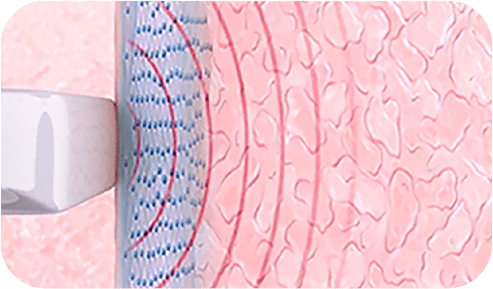
질 벽내 콜라겐 재생
-
질쎄라
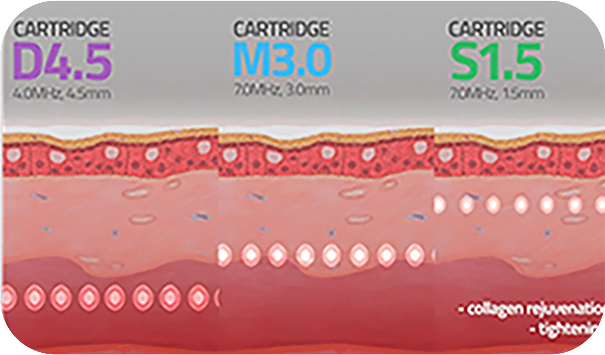
질 내막 심부 리프팅
-
모나리자터치
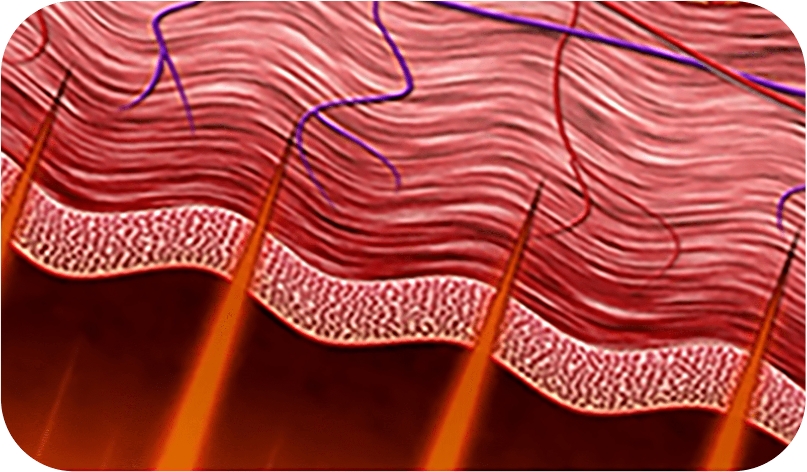
질 점막층 재생
나를 위한
대표 레이저 장치 3가지
-
모나리자 터치 CO2 레이저로 질 점막에
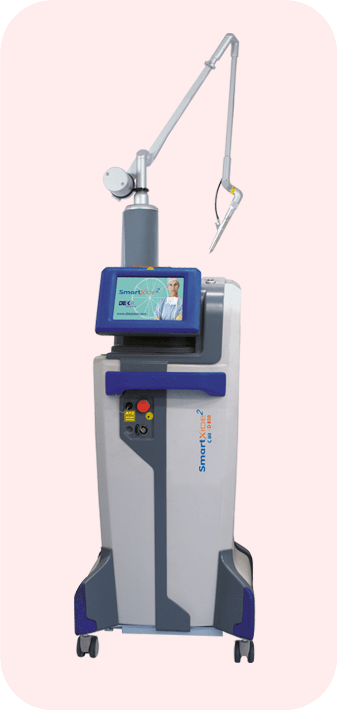
콜라겐 재생과 리프팅 및 타이트닝 -
질쎄라 초음파 리프팅으로
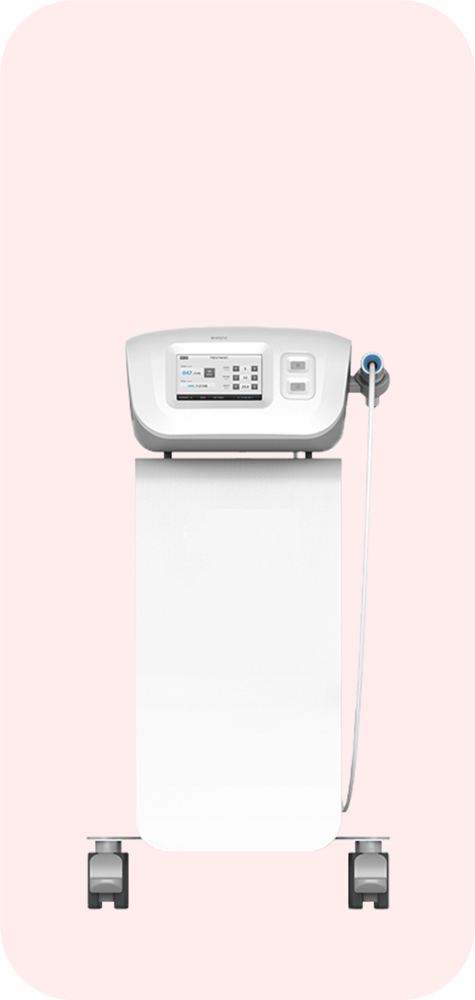
360도 600번 타이트닝 -
비비브 질 내벽 안까지
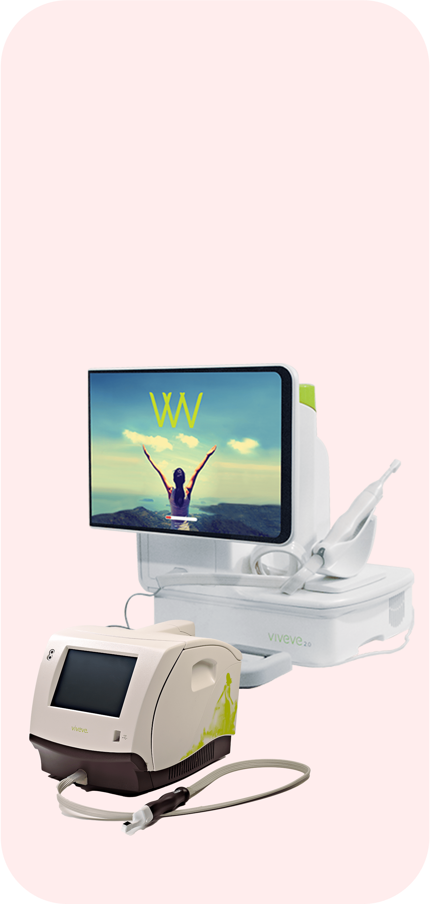
고주파로 콜라겐 재생
-
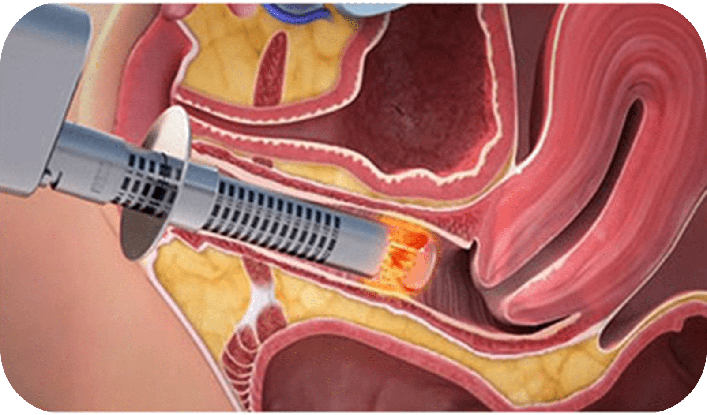
CO2 FRACTIONAL 레이저가
360도 회전하며 질 점막을 자극해
콜라겐을 포함한 여러 가지 물질들이
재합성 하도록 유도합니다. -
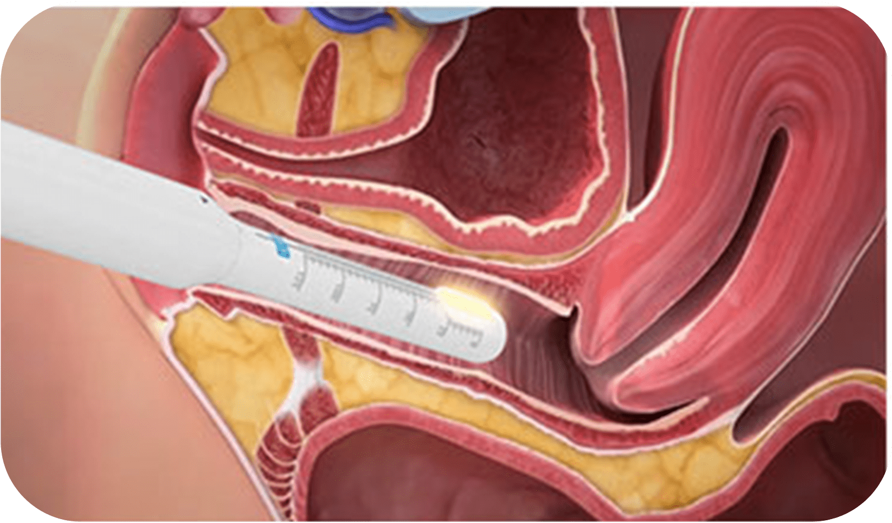
피부 표면을 거의 손상시키지 않고
적정 깊이로 초음파 에너지를 전달하여
섬유 근육층의 수축을 발생시켜
질 내부를 팽팽하고
두꺼워지도록 합니다. -
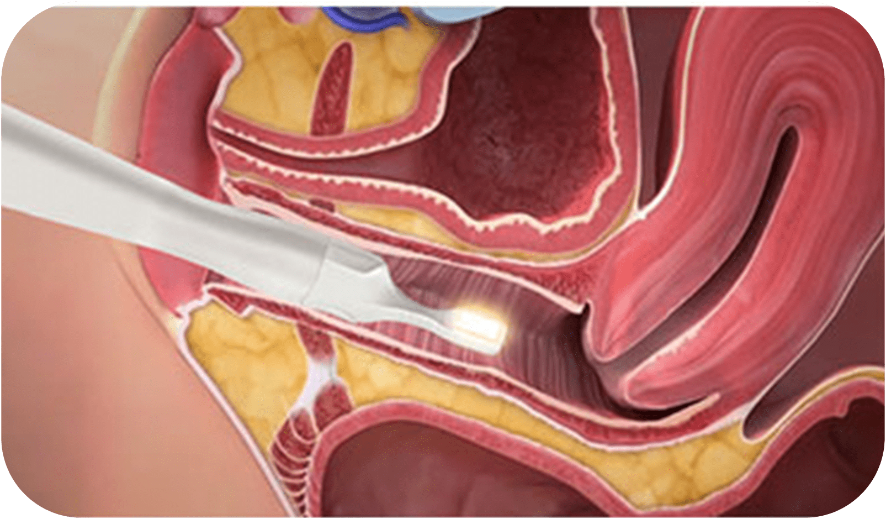
탐폰보다 작은 비비브 팁을
질 입구 점막에 넣고 고르게 조사합니다.
쿨링과 히팅 듀얼 기능으로 질 표면은
차갑게 보호하면서 질 점막 깊은 곳에
고온의 모노 폴라를 고르게 조사하여
새로운 콜라겐 생성을 촉진합니다.
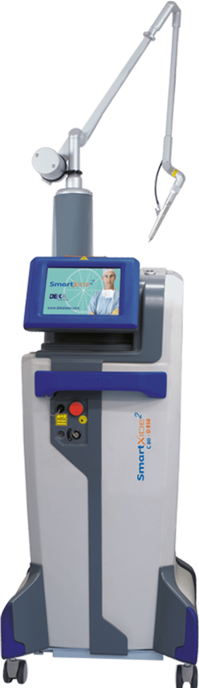
콜라겐 재생과 리프팅 및 타이트닝
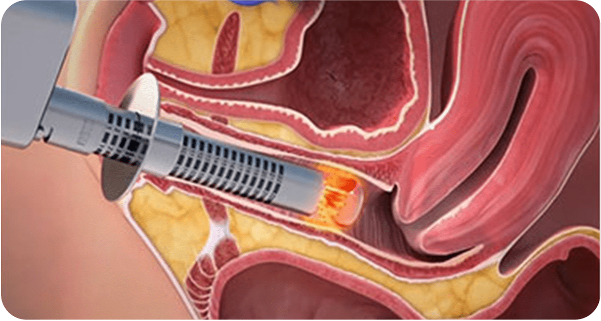
CO2 FRACTIONAL 레이저가
360도 회전하며 질 점막을
자극해 콜라겐을 포함한
여러 가지 물질들이
재합성 하도록 유도합니다.
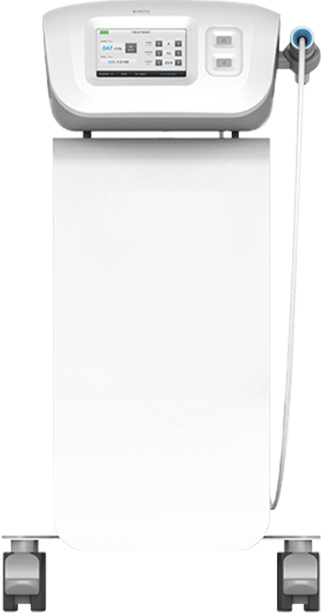
360도 600번 타이트닝
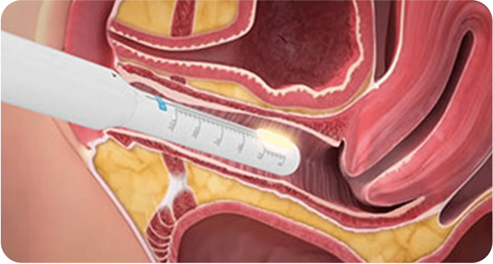
피부 표면을 거의 손상시키지 않고
적정 깊이로 초음파 에너지를
전달하여 섬유 근육층의 수축을
발생시켜 질 내부를 팽팽하고
두꺼워지도록 합니다.
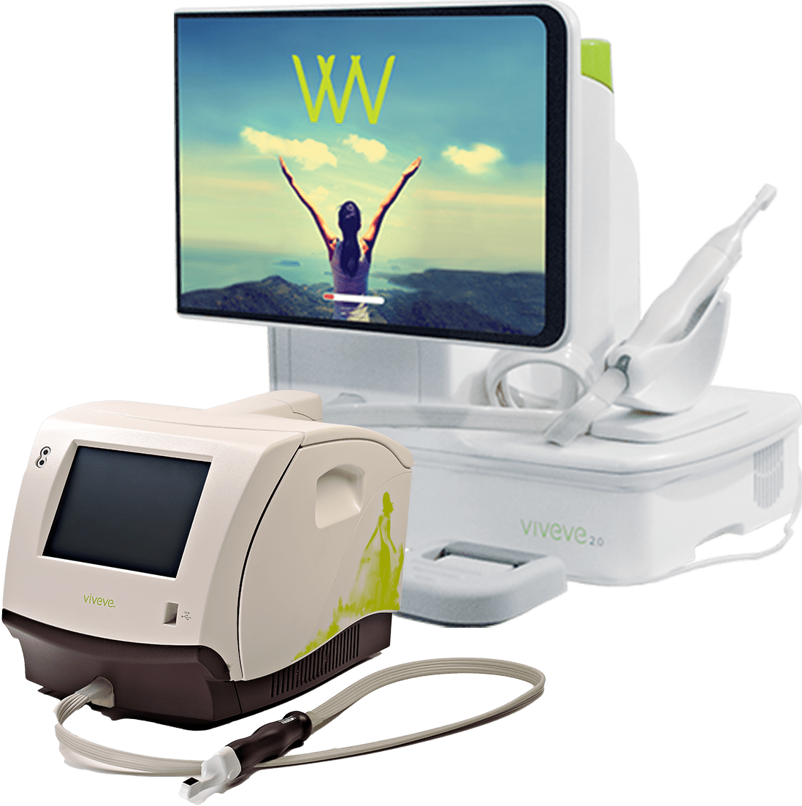
고주파로 콜라겐 재생
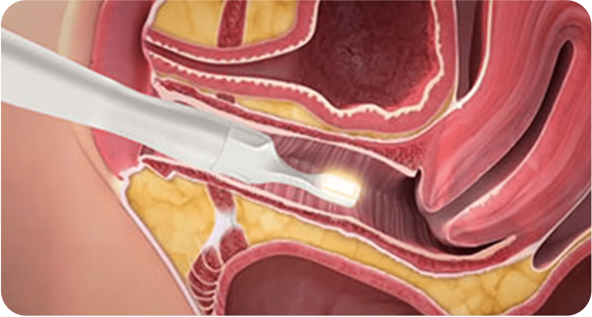
탐폰보다 작은 비비브 팁을
질 입구 점막에 넣고 고르게
조사합니다. 쿨링과 히팅 듀얼
기능으로 질 표면은 차갑게
보호하면서 질 점막 깊은 곳에
고온의 모노 폴라를 고르게
조사하여 새로운 콜라겐 생성을
촉진합니다.
트리플 크라운 질 타이트닝 레이저
효과
-
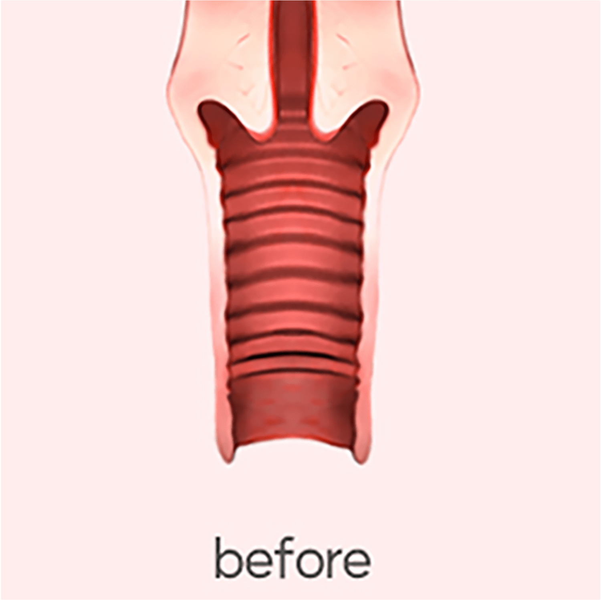
-
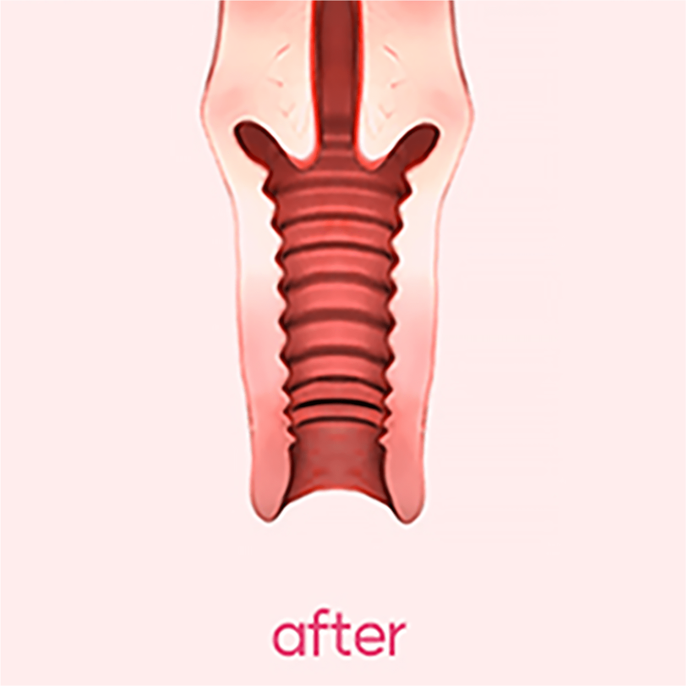
-
질 위측증
개선 - 질 타이트닝
-
질 건조증
개선 -
성감
향상 -
요실금
개선 -
여성질환
예방 -
지속적인
효과
트리플 크라운 질 타이트닝
대상자
-
바람 빠지는 소리가 자주 나서
민망한 경험을 하는 경우 -
성감저하로 부부관계가
원만하지 않은 경우 -
간단한 시술로
만족감을 상승시키고 싶은 경우 -
질 건조증과 냄새를
같이 해결하고 싶은 경우 -
대음순 피부 탄력이
저하되어 변형된 경우 -
질 이완으로
불편함을 겪는 경우 -
만성 질염으로 고생하고
자꾸 재발하는 경우 -
음핵 주위의 노화가 진행되었거나
성감이 저하되는 경우
트리플 크라운 질 타이트닝은
왜
나를위한 산부인과?


-
풍부한 시술 경험의
산부인과 전문의
직접 시술 -
미용적 측면과
기능적 측면까지
함께 고려한 맞춤 시술 -
남모를 고민을
디테일한
부분까지
상담 후
종합적으로 분석 -
상황과 상태에 따른
1대 1 맞춤
질타이트닝 프로그램
질 이완 진단기
를 통한
질압측정

나를위한 산부인과에서는 비비브 질타이트닝,
질 축소술, 질 필러 시술 등에 질압측정을 통한
비교 데이터를 제공해 드리고 있습니다.

프라이빗한 휴식 과 회복
나를위한산부인과에서는 치료를 받는
환자분들이
긴장을 완화하고 편안한
마음으로 쉬실 수 있도록
고급스럽고
편안한 분위기의 1인 회복실을 제공합니다.
레이저 질 타이트닝
시술 후 주의사항
시술 후 주의 사항은 개인 차가 있을 수 있습니다.
-
01
시술 직후 요도 및 점막 조직 자극으로 인한 빈뇨 증상이 일시적으로
생길 수 있습니다.
1주일 내로 자연스럽게 사라지는 증상이오니
걱정하지 마세요. -
02
시술 후 통증이 거의 없어 바로 일상생활이 가능하며, 운동도
제한 없이 하실 수 있습니다. -
03
성관계는 시술 후 바로 가능하지만, 하복부 불편감 혹은 소량의
출혈이 발생할 경우 3일 정도 관계를 피해주세요. -
04
시술 당일 사워, 탕 목욕 및 사우나는 바로 가능입니다.
-
05
점막의 위축이 심할 경우 시술 후 소량의 출혈이 생길 수 있으며,
이러한 증상이 있을 시 본원으로 연락 후
바로 내원하시어 경과를
보시기를 권장 드립니다. -
06
시술 후 음주, 흡연은 시술 결과에 악영향을 끼칠 수 있으니
피해주세요. -
07
시술 후 1주일간 탐폰, 음주, 탕 목욕, 자전거 운동과 같이 시술 부위를
자극할 수 있는 행위는 피해주시고
흡연과 음주는 안정적인 필러
안착을 위해 삼가해주세요.